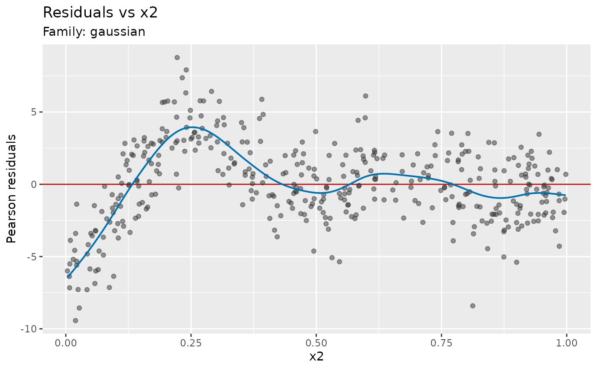
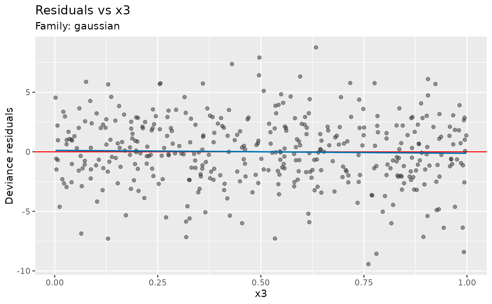
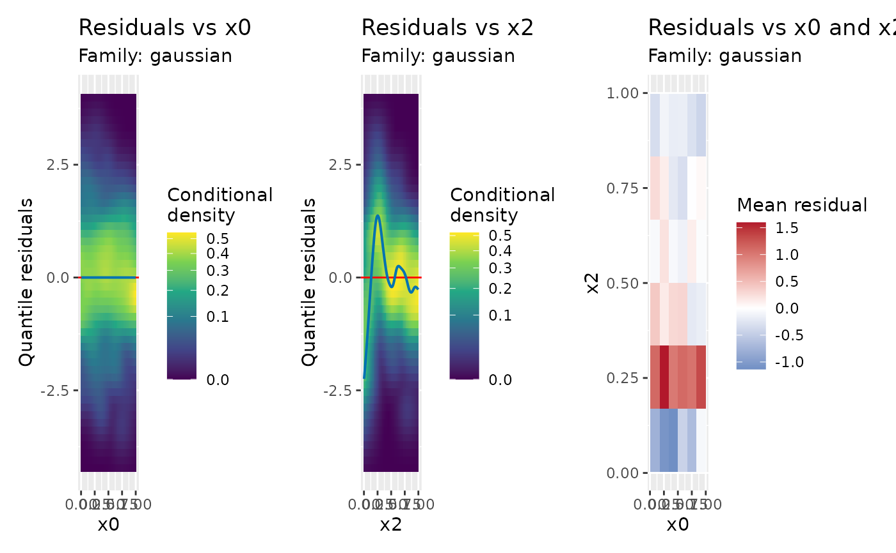

Inspect residuals from the complete fitted model against individual covariates or pairs of numeric covariates.
Usage
residuals_covariate_plot(
model,
covariates = NULL,
terms = NULL,
pairs = NULL,
data = NULL,
by = NULL,
type = NULL,
smooth = NULL,
bins = c(20L, 20L),
min_n = 5L,
statistic = c("mean", "sd"),
seed = NULL,
conditioning = NULL,
n_dharma = 250L,
point_col = "grey20",
point_alpha = 0.5,
line_col = "red",
xlab = NULL,
ylab = NULL,
title = NULL,
subtitle = NULL,
caption = NULL,
ncol = NULL,
...
)
scalable_residuals_covariate_plot(
model,
covariates = NULL,
terms = NULL,
pairs = NULL,
data = NULL,
by = NULL,
type = NULL,
smooth = NULL,
bins = c(20L, 20L),
min_n = 5L,
statistic = c("mean", "sd"),
seed = NULL,
conditioning = NULL,
n_dharma = 250L,
density_bins = c(50L, 50L),
density = c("conditional", "count"),
density_method = c("kde", "histogram"),
bandwidth = NULL,
line_col = "red",
xlab = NULL,
ylab = NULL,
title = NULL,
subtitle = NULL,
caption = NULL,
ncol = NULL,
...
)Arguments
- model
a fitted model supported by diagnostic_support, or prepared diagnostic data. The original model must retain its fitting observations.
- covariates
character vector of exact covariate names, in plotting order.
NULLselects model covariates, excluding variables used only as offsets or random-effect groups.character()selects no individual panels, for use withpairs.- terms
character vector of exact mgcv smooth labels, as returned by
smooths(). For example, use"te(x,z)", not"te(x, z)". Parametric terms, partial matches and numeric or logical selectors are not accepted. Selected smooths supply their original covariates andbyvariables. Cannot be combined with a non-NULLcovariates.- pairs
list of character vectors, each naming two distinct numeric covariates. Adds a joint residual map for each pair, in the supplied order.
- data
original fitting data or retained fitting observations, including model predictors needed to verify alignment. Can contain additional covariates absent from the model. Rows are matched to stored observations and their evaluated predictors checked. Row counts alone do not establish alignment.
NULLuses stored data, recovering raw covariates from the fitting call only when needed and verifying them in the same way.- by
optional name of a categorical covariate defining separate facets.
- type
character or
NULL; residual type:"deviance","pearson","response","pit","quantile","dharma", or"surrogate"(forocat()ormultinom()GAMs). Grouped models automatically use quantile residuals when all active components are supported, otherwise all use deviance residuals with a message. Ordinary models retain deviance residuals by default. Seeappraise()for distributional support.- smooth
logical or
NULL; add a descriptive penalised smooth of the mean residual to numeric panels. The default,NULL, fits a trend only for groups with at most 20,000 eligible observations.TRUEfits a trend regardless of group size;FALSEomits all trends. No confidence bands or tests are computed.- bins
positive integer or pair of integers giving the numbers of cells along the two covariate axes of joint maps.
- min_n
positive integer; joint-map cells with fewer observations are blank. Counts for occupied cells are retained in the plotting data.
- statistic
joint-map summary:
"mean"or sample standard deviation,"sd". Cells containing one observation have undefined standard deviation.- seed
integer; random seed to use for PIT, quantile, surrogate or DHARMa-style residuals.
- conditioning
character or
NULL;"conditional"holds fitted random effects fixed,"marginal"averages over new effects, and"gam_component"uses the extracted GAM. Availability and defaults depend on the model; see diagnostic_support.- n_dharma
positive integer; number of simulations for DHARMa residuals.
- point_col
Deprecated; use
gratia_theme_get()theme settings instead. Colour for individual residual points or observation locations.- point_alpha
Deprecated; use
gratia_theme_get()theme settings instead. Numeric; alpha transparency for points in plots.- line_col
Deprecated; use
gratia_theme_get()theme settings instead. Colour for reference lines and categorical group means.- xlab
character or expression; the label for the x axis. If not supplied, a suitable label will be generated.
- ylab
character or expression; the label for the y axis. If not supplied, a suitable label will be generated.
- title
character or expression; the title for the plot. See
ggplot2::labs().- subtitle
character or expression; the subtitle for the plot. See
ggplot2::labs().- caption
character or expression; the plot caption. See
ggplot2::labs().- ncol
optional number of columns when composing several panels.
- ...
arguments used to prepare model diagnostics, such as sdmTMB
componentandfield_method. For grouped-family GAMs and joint GJRM models,response = NULLuses every response and an integer selects one; seeappraise(). Selection leavesby_familyindependent.- density_bins
Positive integer or pair of integers giving the number of horizontal and vertical heatmap bins.
- density
One of
"conditional"or"count". Conditional density is estimated usingdensity_method. With"histogram", it is the count divided by the horizontal-bin total and vertical-bin width. Empty horizontal bins are blank. Counts are always unsmoothed.- density_method
Conditional-density estimator:
"kde"(the default) usesKernSmooth::bkde2D()with Gaussian kernels;"histogram"uses unsmoothed rectangular bins. Only affects the residual heatmap.- bandwidth
Optional pair of positive bandwidths for the predictor and residual axes, in their plotted units.
NULLuses normal-reference bandwidths, adjusted for two dimensions, with a fallback for constant axes. Used only fordensity_method = "kde"and conditional density.
Value
A ggplot for one panel, or a patchwork composition for several. Scalable plots retain only summaries and evaluated trend curves.
Details
Covariates are plotted in their original units. A term such as s(log(x))
selects x; stored transformed coordinates are never inverted to recover
original values. Supply data if those values are unavailable. Term
selection does not plot fitted term contributions or partial residuals. A
factor-specific smooth selects covariates without restricting observations;
use by to inspect patterns separately among groups.
Pearson residuals are useful for checking the mean function because they account for the specified mean–variance relationship. Response residuals retain the response units. A remaining curve can suggest an incorrectly specified mean function, including insufficient flexibility in a smooth. Quantile and PIT residuals are useful for checking the conditional response distribution, including changing spread and tails. Non-Gaussian deviance residuals need not have zero conditional mean, so their mean curve need not follow the zero reference line even under the fitted model.
Numeric panels show points, or conditional-density heatmaps in the scalable version. Categorical panels show boxplots and group means; the ordinary version also shows points. Joint maps show means or standard deviations within rectangular cells. The ordinary version also shows observation locations. Mean maps use a diverging colour scale centred on zero, or 0.5 for PIT and DHARMa residuals. Standard-deviation maps use a sequential scale. These are descriptive summaries, not tests against simulated reference maps. An omitted interaction can produce a joint pattern even when both individual covariate panels appear flat. Correlated covariates can share residual patterns; use the plots to guide model revisions and subsequent checks.
All eligible observations are used. Mean trends use a shrinkage cubic spline
with up to 40 basis functions, fitted with GCV below 10,000 observations and
discrete fREML via mgcv::bam() otherwise. The same calculation is used by
both plotting functions. Trends are omitted with fewer than four distinct
covariate values. Summaries and trends are calculated separately within each
response, family component and by group. Missing plotting values are
reported and omitted separately for each requested plot.
Examples
load_mgcv()
dat <- data_sim("eg1", n = 400, seed = 2)
m <- gam(y ~ x2 + s(x0) + s(x1), data = dat, method = "REML")
# A curve against x2 suggests reconsidering its linear effect.
residuals_covariate_plot(m, covariates = "x2", type = "pearson")

# Check a covariate omitted from the model.
residuals_covariate_plot(m, covariates = "x3", data = dat)

# Inspect individual covariates and possible remaining interaction structure.
scalable_residuals_covariate_plot(m, covariates = c("x0", "x2"),
pairs = list(c("x0", "x2")), bins = 6, type = "quantile", seed = 42)
